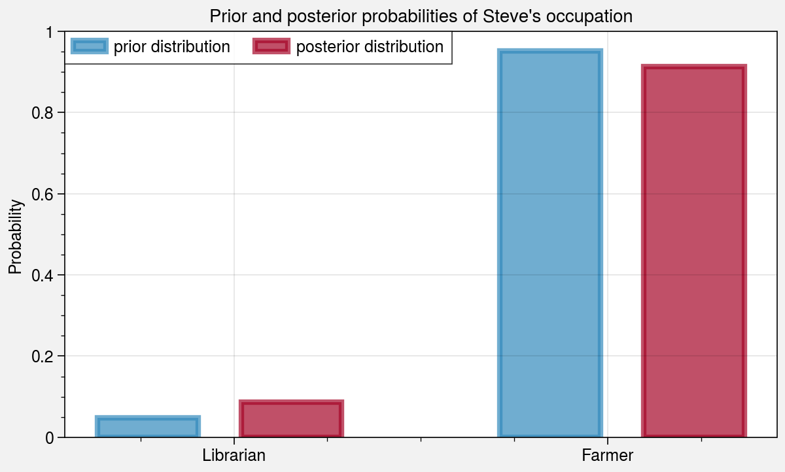

import proplot as plt
colors = ["#348ABD", "#A60628"]
prior = [1 / 21.0, 20 / 21.0]
posterior = [0.087, 1 - 0.087]
fig, ax = plt.subplots(aspect=(3.5, 2), width=6)
ax.bar(
[0, 0.7],
prior,
alpha=0.7,
width=0.25,
color=colors[0],
label="prior distribution",
lw="3",
edgecolor=colors[0],
)
ax.bar(
[0 + 0.25, 0.7 + 0.25],
posterior,
alpha=0.7,
width=0.25,
color=colors[1],
label="posterior distribution",
lw="3",
edgecolor=colors[1],
)
ax.legend(loc="best")
ax.format(
xticks=[0.15, 0.80],
xticklabels=["Librarian", "Farmer"],
title="Prior and posterior probabilities of Steve's occupation",
ylabel="Probability",
grid=True,
)

%load_ext watermark
%watermark -grb -du -iv
Last updated: 2020-11-27
Git hash: 0f38d2abc8e59398ce2708ab976146a134652ccf
Git repo: git@github.com:andersy005/blog.git
Git branch: main
proplot: 0.6.4